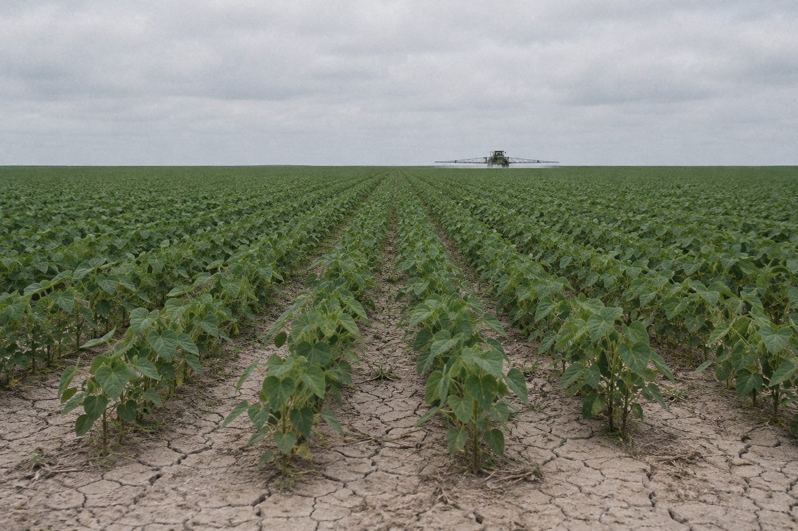
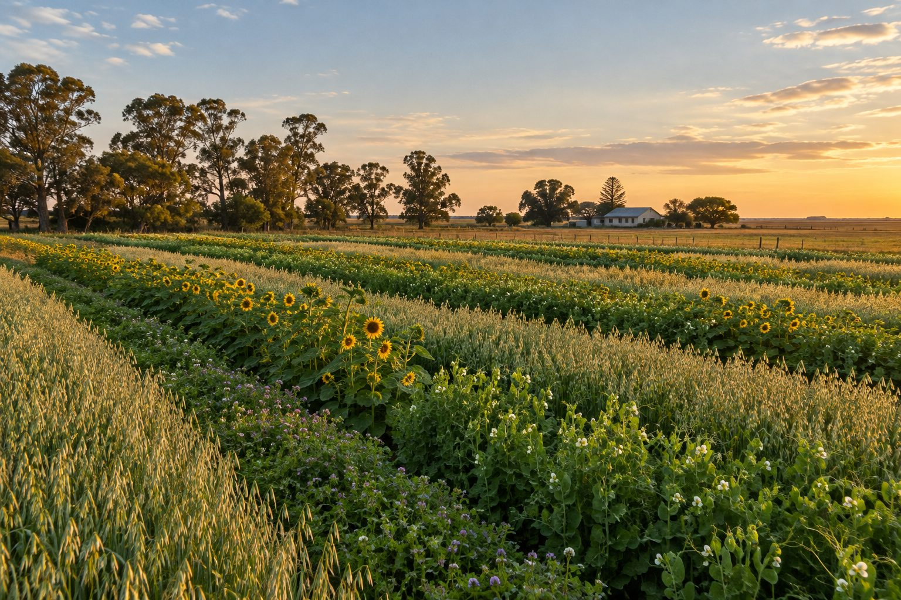

Energía, para vos y para la tierra
Hacemos barras de cereal con lo que cultivan pequeñas familias productoras que cuidan y regeneran la tierra. Cada barra te cuenta de dónde viene.
¿Qué es el monocultivo?
Es sembrar lo mismo, en el mismo lugar, campaña tras campaña. Es eficiente para producir mucho de una sola cosa y por eso se expandió: en Argentina, el ejemplo más conocido es la soja.
El problema es lo que pasa abajo de la planta. Un suelo no es un soporte inerte: es un ecosistema lleno de vida, que necesita raíces distintas y materia orgánica para mantenerse. Cuando siempre crece lo mismo, se le saca siempre lo mismo y se le devuelve poco.
Con el tiempo, la tierra se vuelve más dura y pierde fertilidad, y hacen falta cada vez más insumos para sostener el mismo rendimiento.

Casi todo lo que comemos sale del suelo
Y el suelo no se recupera solo de un año para el otro. Por eso nos importa cómo se cultiva lo que compramos.
de nuestros alimentos viene del suelo, según la FAO.
suelos del mundo ya está degradado, también según la FAO.
puede tardar en dañarse un suelo que queda sin cobertura, advertía Roberto Casas, del INTA, que señaló el exceso de monocultivo como la principal amenaza.
Comprando distinto, a quienes cultivan distinto
No alcanza con hacer menos daño. Queremos que cada barra ayude a recuperar la tierra de donde salió.
Rotar y diversificar
Nuestras familias alternan cultivos y mezclan especies, para que el suelo no pierda siempre lo mismo.
Mantener el suelo cubierto
Rastrojos y plantas de cobertura lo protegen del sol y del viento, y le devuelven materia orgánica.
Cultivar sin agroquímicos
Sin fertilizantes sintéticos: solo abonos naturales y control biológico de plagas.
Cuidar las semillas criollas
Se guardan y se intercambian entre productores, para no perder variedades adaptadas a cada lugar.
Pagar un precio justo
Compramos directo a pequeñas familias. Producir así lleva tiempo, y tiene que poder sostenerse.
Cerrar el ciclo
El envase es 100 % home compostable: vuelve a la tierra en una compostera hogareña, sin dejar microplásticos.
La diferencia, lado a lado
| Monocultivo | Agricultura regenerativa | |
|---|---|---|
| Qué se siembra | Una sola especie | Varias, en rotación |
| El suelo | Queda expuesto y se empobrece | Siempre cubierto, gana materia orgánica |
| Insumos | Dependen de agroquímicos | Abonos naturales y control biológico |
| Semillas | Compradas cada campaña | Criollas, guardadas e intercambiadas |
| Quién produce | Grandes escalas | Familias con nombre y apellido |

Buscábamos una barra que no existía
Terra Viva empezó con una pregunta simple, mirando una góndola: ¿alguna de estas barras es buena para quien la come y también para la tierra?
Encontramos soluciones a medias. Unas eran sanas, otras apoyaban una causa puntual y otras reciclaban un poco. Ninguna se hacía cargo de todo el recorrido: de dónde sale el ingrediente, quién lo cultiva y adónde va a parar el envase.
Por eso decidimos unir las tres cosas en una sola barra: agricultura regenerativa, comercio justo con familias productoras y un envase que vuelve a la tierra. Y como sabemos que del "verde" de las marcas ya nadie se fía, pusimos un QR en cada envase para que lo compruebes.
Detrás de cada barra hay una familia
Escaneá el código del dorso de tu envase, o mirá acá quién cultivó cada ingrediente.